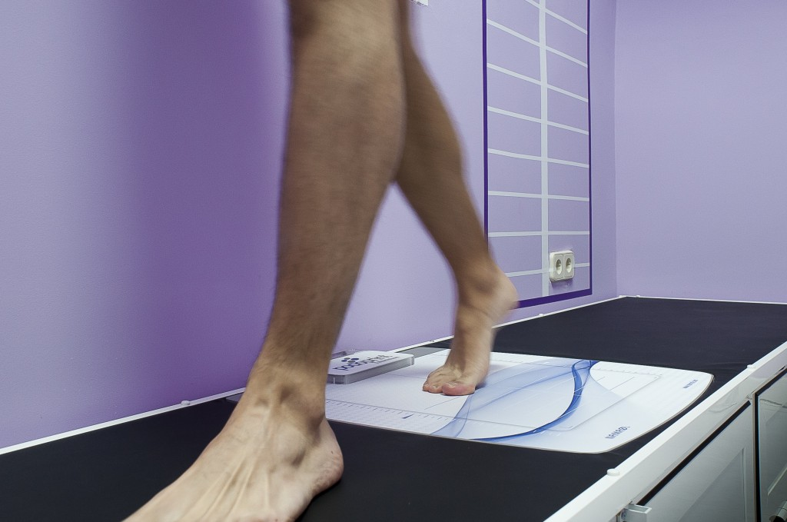
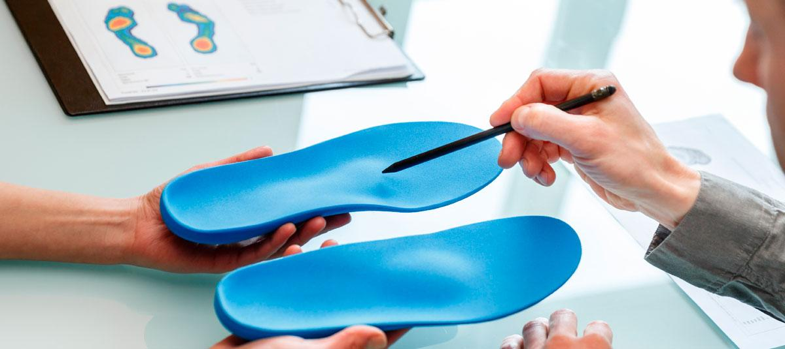

Para confeccionar unas plantillas para los pies (también llamadas ortesis plantares) se realiza un estudio biomecánico y barométrico personalizado para cada paciente en función de sus necesidades. El estudio se realiza en estática (de pie), en dinámica (andando) y postural (manteniendo la posición durante 30 sg).

PLANTILLAS PARA LOS PIES Y ORTESIS PLANTARES

Detalles
- Duración tratamiento:30 Minutos
- Número de sesiones:1
- Periodo de adaptación: En 3 Semanas
- Resultados: En 1 mes y medio
- Precio: A consultar
Qué está incluido
- Estudio biomecánico y análisis de la marcha
- Preparación de las plantillas para los pies y su entrega
- Revisión al mes y medio
Cómo se realizan las plantillas para los pies
Se toman las medidas al finalizar el estudio biomecánico y barométrico y se mandan al laboratorio para que realicen a medida las plantillas para los pies. La elección del material de la plantilla va a depender de las características de cada paciente.

Para qué sirven unas plantillas para los pies
Mejoran la compensación del aparato locomotor para prevenir lesiones y estabilizar y relajar las estructuras óseas, articulares y de partes blandas. En niños se consigue corrección si todavía están en fase de crecimiento.
Quién se debe realizar plantillas para los pies
- Todas las personas con alteración del aparato locomotor y predispuestas a sufrir lesiones.
- Todas las personas que tengan molestias en el pie, miembro inferior y resto del aparato locomotor.
- Personas que tengan dismetrías (una pierna más larga que otra).
- Deportistas que realizan ejercicio con frecuencia.
- Personas que presenten dolor en cualquier localización en el pie.
- Niños que nos lleven a sospechar que no andan (retraso a la hora de andar, se tropiezan con frecuencia, cojean…).